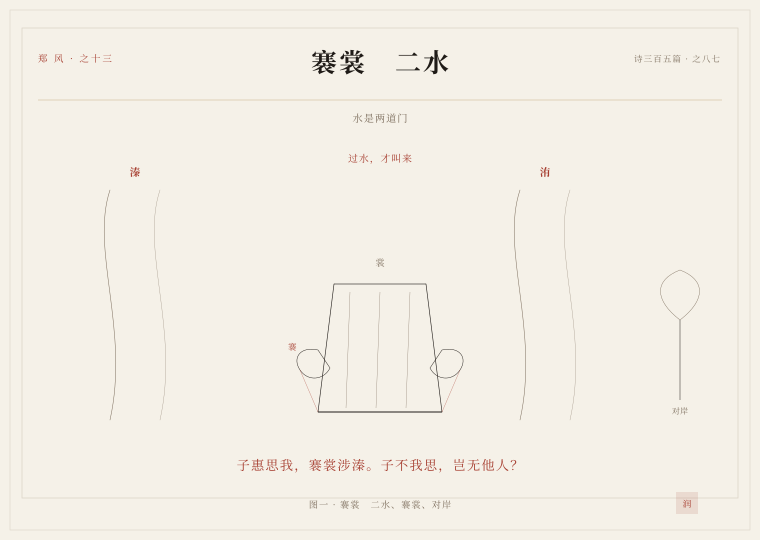
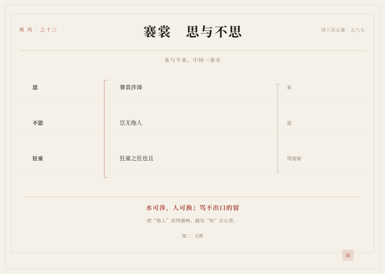

第八十七篇 褰裳
郑风 · 之十三 SJ087
朗读 · 普通话
依经文原文朗读，章次不读出；配古琴底乐，不改速、不加拖腔。全库同一音色（豆包 TTS），非播音员录制。
一 解题
诗三判：
- 谁在说：一个站在水边的人，对着对岸的“狂童”说话。她说：你若是想我，就提起衣裳涉溱过来；你若不想我，难道没有别人？你这个狂童，狂得真可以！
- 说什么事：两章，只换水名“溱/洧”、人称“他人/他士”。水是同一个水，理是同一个理；你来，是你；你不来，是别人。
末句“狂童之狂也且”是骂，也是留。
- 为何编在此：郑风之十三。086 写“你不跟我说话”，087
写“你不来找我”。一个把冷落咽下去，一个把冷落骂出来；一吞一吐。
《毛序》：“《褰裳》，刺忽也。狂童恣行，国人思大国之正己也。”
朱子《诗集传》：“赋也。惠，爱也。溱、洧，二水名。褰裳，涉水也。岂无他人，言他人之可思者多也。狂童，指忽也。○淫女戏其所私者曰：子惠然思我，则褰裳涉溱而来；子不我思，则岂无他人之可思？狂童之狂也且！”
本库的看法：《褰裳》是一首把“求”写成“激”的诗。
诗不写“我想你”，写“你若想我，就涉水来”；不写“我怕你走”，写“你不来，我有别人”。把水放在中间，把“他人”放在嘴边，把“狂童”骂在末句。
这不是不爱，是用退路逼进一步；不是不要，是把“要”藏在“不要”里。
先辨四事：“惠”是爱，不是“恩惠”；“褰裳”是提起下裳，不是“脱衣”；“溱、洧”是郑国二水，不是“秦、洧”；“狂童”是戏称/指忽，不是“疯孩子”。
二 经文
第一章
子惠思我，褰裳涉溱。
子不我思，岂无他人？
狂童之狂也且！
第二章
子惠思我，褰裳涉洧。
子不我思，岂无他士？
狂童之狂也且！
分章：二章，章五句。
三 韵读
- 一章：溱、人，真部；“且”语助，不入韵。
- 二章：洧、士，之部；“且”语助，不入韵。
读法：两章各两韵，末句“且”是语助；韵到“且”就断，像话到“狂童”就停。
断得越干脆，留得越明显。
四 字义与名物
- 惠：爱、惠然。思：想念。
- 褰裳：提起下裳。涉水时提衣，防湿。
- 溱、洧：郑国二水名；溱在今河南新密一带，洧即洧水。
- 岂无他人/他士：难道没有别人？他人，别人；他士，别的男子。
- 狂童：狂放之童；一指郑忽，一为戏称。
- 且：语助，句末叹词；不是“而且”。
五 今译
你若是爱我、想我，就提起衣裳涉过溱水来。你若不想我，难道没有别人？你这个狂童，狂得真可以啊！
你若是爱我、想我，就提起衣裳涉过洧水来。你若不想我，难道没有别的男子？你这个狂童，狂得真可以啊！
六 章旨
- 一章：以溱水为界。“惠思”是来，“不我思”是不来；来与不来，中间只隔一条水。
- 二章：以洧水为界。只换水名与人称；水换一条，理不换。
- 总收：水可涉，人可换；一句狂童，骂不出口的留。
诗把“他人”说得越响，越见“你”在心里的位置。
七 诗教
- 兴：以涉水起兴。水深可涉，人心难涉；水是可见的难，心是不可见的难。
- 观：观“思”与“不思”。说“岂无他人”，不是真有别人，是把“你”放在“他人”之上。
- 群：一男一女，隔水对话；水是礼，也是借口。
- 怨：怨而能笑。“狂童之狂也且”是骂，也是笑；真断的人，不会骂。
八 分寸与边界
- 不可把“惠”当“恩惠”。它是爱；一读成施恩，诗就成交易。
- 不可把“褰裳”当“脱衣”。它是提裳涉水；一读成脱，礼就没了。
- 不可把“岂无他人”当“我真有别人”。它是激将；一读成事实，诗就成炫耀。
- 不可把“狂童”当“疯子”。它是戏称/指忽；一读成病，骂就成真骂。
- 不可把“且”当“而且”。它是语助；一读成连词，末句就断了。
九 存疑
- 诗旨：毛序“刺忽，狂童恣行，国人思大国之正己”；朱子“淫女戏其所私”。一政治，一私情；本库两存，以“激将”读。
- “狂童”：毛、朱指忽；一说为所私者。从“指忽”，才见“大国正己”。
- “他人/他士”：泛称；一说“他人”指别国，“他士”指别国之士。从泛称，才见激。
- “且”：语助；一说“且”为“哉”。两读同。
- 作者与年代：毛序不言作者；朱子以为“淫女”。是否刺忽，无确证。
十 跨典
- 《论语·泰伯》：“狂而不直，侗而不愿，悾悾而不信，吾不知之矣。”——“狂童”之狂，正欠一个“直”。
- 《孟子·离娄上》：“不仁者可与言哉？”——可与“子不我思”对读；不与言，是冷；不涉水，是拒。
- 《礼记·曲礼上》：“男女不杂坐，不同椸枷，不同巾栉。”——隔水相语，是礼的边界。
- 《诗本音》：二章韵读，溱、人真部，洧、士之部，见卷三。
十一 双卡与图
双卡六对：
| 惠（爱） |
惠（恩惠） |
| 褰裳（提起下裳） |
褰裳（脱衣） |
| 溱／洧（郑二水） |
溱／洧（秦、洧） |
| 岂无他人（激将） |
岂无他人（真有别人） |
| 狂童（戏称／指忽） |
狂童（疯子） |
| 且（语助） |
且（而且） |

图一 · 褰裳 二水、褰裳、对岸

图二 · 褰裳 思与不思
读图三处：
- 两水并流：图一左溱右洧，两条水线并排，中间一个人提裳。水是两道门，过哪一道，都是同一个“来”。
- 对岸无人：图一对岸只画一棵树、一件衣，不画人；“狂童”不在眼前，诗才有“来不来”的悬。
- “他人”在侧：图二左“思→涉”，右“不思→他人”，中间“狂童”压底；退路画在边上，正路才显。